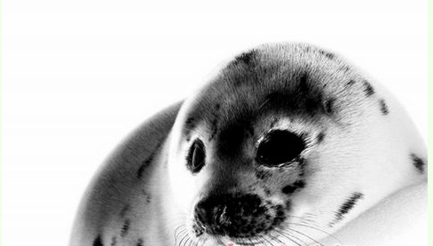

加拿大的海豹

争议现场充满了硝烟味，抵制与反抵制远没有停战。
当晚，吕贝卡和安吉尔·帕米匆匆赶往加拿大东海岸。毕竟天气一旦放晴，那里等候着的海豹捕猎船又将出海。“我们不能阻止屠杀，但至少可以告诉更多人真相，唤醒他们抵制海豹产品”，吕贝卡语气坚定。而今年年内，张丹老师参与组织的反对加拿大海豹制品活动，也将陆续在上海、济南、厦门、大连等国内城市展开。
该国批准历史上最大规模的海豹猎捕配额并将贸易重点转向中国，数十万海豹的
3月下旬，北京正是这一年里最好的春天;而遥远的加拿大东海岸，则刮着气温零度以下的一场暴风雪。
也许大多数陶醉于春色的北京人还不知道，加拿大东海岸圣劳伦斯湾一带，海豹妈妈们在这个寒冷的早春，又诞生了一批新生的海豹宝宝。而接下来等待这批新生海豹们的，或许将是比早春更冷酷的命运?
3月28日下午，针对加拿大海豹的命运，中国国际商会与首都爱护动物协会共同举办了一场“关注动物保护，倡导绿色贸易”的国际研讨会。
国际动物保护协会加拿大分会主席吕贝卡一头金发，风风火火走进北京西直门会场。“情况非常紧急”，“不仅仅是猎捕，简直就是屠杀”，这位13年来一直为海豹命运抗争的加拿大美女心急如焚。
当晚就要飞回加拿大海岸的吕贝卡解释：因为加拿大政府3月下旬已经批准了今年春天近50万头的海豹猎捕配额指标，等这两天的暴风雪过后，格陵兰岛附近的加拿大海豹，或许又将遭受一次历史上最大规模的集体猎捕，而中国消费者的态度或许可以改变这一切。
中国消费者态度很重要
随着两国签订海豹产品进口的相关备忘，中国将成为加拿大海豹业下一个全球重要市场
加拿大人吕贝卡参与动物保护行动，最早也是缘自于海豹。
13年前，吕贝卡与朋友们一道乘坐小型飞机，到达加拿大东海岸旅游。“当时我们没有看到海豹们融融和乐的场景，而是更多看到了苍蝇一样密密麻麻的海豹捕猎船，即使是在1000英尺的高空，我们也能看到海面浮冰上的鲜血”，等吕贝卡他们到达捕猎船附近冰面时，海豹猎捕者径直从他们身边跑过去，举起粗大的木棒，向小海豹们砸下去，再砸下去，木棒砸打的声音在雪面回响，鲜血的味道到处弥漫……
“那些被当场棒杀的小海豹，大多只有3个半月大，根本没有自卫能力，许多小海豹不是被当场打死，而是拖走时被自己的血呛死”，吕贝卡说，“我永远无法忘记小海豹遭受的苦难。”也正是那次独特的旅行经历，让吕贝卡决定为终止海豹猎杀而工作。
去年底今年初，加拿大海洋与渔业部长两次访华。访华期间，该部长向中国郑重推荐了加拿大海豹产品。今年初，该部长与中国商务部签订了相关备忘：即允许中国商人进口加拿大海豹肉、皮毛等产品。
据加拿大媒体报道，加拿大海洋与渔业部长回国后，高调出席了渔业部门相关会议，鼓励厨师开发海豹宴。当地媒体则一派欢呼，宣称：中国将成为加拿大海豹业下一个全球最重要的市场。而加拿大媒体看好中国市场的原因竟然是：中国人什么都敢吃，中国还没有动物保
在加拿大，法律允许捕杀出生12天以后的小海豹。今年3月底，加拿大政府再次批准了今年春天海豹猎捕的配额指标，允许东海岸渔民可捕杀竖琴海豹(harpseal)40万头，斑海豹(hooded seal)8200头。其猎捕配额数量之大，为加拿大1971年以来最高一次。
“因此，中国的态度很重要，中国消费者或许可以终止眼前下一轮的海豹大屠杀”，在吕贝卡眼里，中国现在好比正站在一个十字路口，“可以选择跟加拿大政府站在一道，延续残忍的海豹猎捕业，也可以选择跟哥伦比亚等其它禁止进口海豹制品的国家一道，对海豹制品说不，成为拯救海豹的希望所在。”
吕贝卡承认，国际动物保护协会跟加拿大政府一样，都将赌注押在了中国身上。不同的是，前者是拯救加拿大海豹免于杀戳，后者却是挽救日渐没落的加拿大海豹猎捕业。
动物保护组织在“阻击”
志愿者向社会宣传加拿大海豹业的无人道，并呼吁停止向中国兜售血腥产品
“正常的海豹可以长到13-15岁，然而仅在出生12-16个月后，猎杀者出现了……”从上世纪60年代就开始关注海豹命运的国际爱护动物基金会(IFA W )中国项目主任华宁说。
随着深入了解加拿大海豹业的残忍现状，中国动物保护组织开始行动起来，
去年11月30日，在加拿大渔业部长第二次访华前后，北京动保志愿者举行活动，首次向社会宣传加拿大海豹业的无人道。在这次活动上，中国负责《禁止动物虐待法》起草小组人员吁请国家商务部：慎重引入加拿大海豹制品。
今年3月13日，在国际海豹日来临之前，中央音乐学院张丽达教授组织护生合唱团，在北京为300多名观众首演了《小海豹BA BY》。舞台上，穿着白茸茸外套、扮演小海豹的8岁北京女孩萧潇，面对大棒，哭得一脸泪水。
“加拿大每年屠杀30万头海豹，其中95%都是小海豹”，“出生10多天就当着海豹妈妈的面，在浮冰上被杀害，我相信每一个母亲都无法接受”，张丽达教授在演出中表示，她希望用这些打动人心的艺术方式，阻止对小海豹的虐杀。
此外，今年1月和3月，全国近50家动保组织分别两次联名向加拿大海洋与渔业部长及驻华大使馆写信，呼吁停止向中国兜售血腥产品———海豹制品。全国两会期间，全国政协委员张抗抗更是专门为此提交了一份正式提案。
“我们有足够的理由拒绝加拿大海豹产制品”，中国动保记者沙龙联合发起人张丹称。事实上，加拿大海豹业在全世界30多个国家对其禁止进口之后，目前已经成为一个式微的夕阳产业。
1972年，美国率先立法取缔了一切海洋哺乳动物产品的进口;1983年，欧洲共同体决定禁止进口白袍海豹(出生仅12天)产品和1岁灰袍海豹制品;2006年以后，墨西哥、克罗地亚、比利时、荷兰、俄罗斯等国也纷纷出台法律，禁止进口1岁以下被猎捕海豹制品。
“2010年，欧盟27国禁止进口加拿大海豹制品的法令正式生效，这时加拿大政府才将市场重点转移至中国”，华宁介绍，她所在的基金会，曾在加拿大国内进行民意调查，发现62%的受访者，支持取缔这一过时产业;84%的人认为应该禁止海豹产品。
近几年，加拿大海豹产业和市场更是日渐萎缩。华宁举例：比如2006年，加拿大海豹业从业人员5000-6000人，去年才400人;2006年海豹皮价格100美元/张，去年也仅18美元/张。过去两年，由于加拿大海豹业在全球贸易中的不受欢迎，猎捕者缺乏动力，约共有50万只海豹免于被杀害。“但今年(猎捕)规模却如此之大”，华宁很愤慨。
3月28日，专程从美国赶来的世界动物联盟执行总监安吉尔·帕米，过去七年中曾亲自到加拿大海豹屠宰船调查过，他认为，除了这一行业的残忍外，另外基于海豹肉本身含有水银、镉等重金属物质，卫生和现实监管都无法保证安全等原因，也呼吁取缔这一产业。
“10多万平方英里的海面范围内，一天之内就有几十万只海豹被猎杀，工厂或政府怎么可能对之有效监管?”他反问。
政府出面禁止进口行不通?
商务部研究员称国家出面将可能使中国在国际贸易中付出巨大代价，抵制举动最好由民间自发达成
中国能否也像欧盟、墨西哥、俄罗斯等国一样，禁止加拿大海豹制品进入国内?今年初，国内的动保志愿者将目光更多聚焦至国家相关部门。
今年2月，关心海豹命运的北京动保志愿者在加拿大使馆网站看到一则报道。该报道称：加拿大和中国之间已达成一项新的市场准入安排，为加拿大海豹产品打开了一个重要的新市场，该安排从2011年1月13日开始生效，将允许所有加拿大海豹产品出口到中国。
“虽然这则报道没有一处提到‘海豹皮’三个字，但动保人士都能看出这是加拿大政府明修栈道暗渡陈仓，试图掩盖其向中国政府倾销海豹皮的事实”，北京一家环保N G O人士透露，正是在获得这个信息之后，动保人士开始向国家相关部门进行游说，因此才有了3月底由中国国际商会、首都爱护动物协会一起举办的海豹研讨活动。
研讨会上，商务部国际贸易经济合作研究院中贸研究部梅新育博士自嘲成了势孤“反对派”。“海豹制品贸易对中国而言，并不是一个很大的贸易项目，可以说，对整体中国贸易利益的影响微乎其微”，梅博士称，中国每年的进口额达1万亿美元，其中根本查不到海豹制品这一项，“如果在‘活的动物产品’、‘食品饲料’类查询，其每年交易额估计也只有万分之几，不到1/1000”，“但政府出面禁止进口行不通”。
梅自称，从道义上讲，自己也不支持捕杀海豹幼崽，至少要等到有了繁殖能力之后再捕杀，但从国家层面禁止海豹制品进口，现有法律体系中却找不到明确的法律支撑，而且还可能违反国际贸易规则，被贸易国进行起诉，从而损害中国在国际贸易中已经获得的平等贸易谈判权。“中国接受
“中国是一个出口大国，也是一个进口大国，我们没有理由禁止人家出口，否则我们也会被制裁，我们民间几十万人生产的产品可能被影响”，“另外即使通过了禁止进口法律，政府当前也没有足够的人力物力资源来对之督查，岂不让法律也沦为笑话?”梅希望抵制加拿大海豹制品的举动，最好由民间自发达成“无消费即无屠杀”。
美国国际人道对待动物协会中国政策顾问李坚强博士则针锋相对，认为世贸组织第22条有一个建议例外规定：比如一个产品如果违反一个国家的道义原则，是不可以买卖的。李认为在加拿大国内并不销售海豹产品的基础上，加拿大向中国推销海豹制品，有同当年英帝国向中国倾销鸦片。
加拿大海洋与渔业部长回国后，当地媒体一片欢呼，宣称中国将成为加拿大海豹业下一个全球最重要的市场。而他们看好中国市场的原因竟然是：中国人什么都敢吃，中国还没有动物保护法。行动亚洲动物保护总监张元元则担心允许进口加拿大海豹制品，将对中国已列为国家二级保护动物的辽宁斑海豹带来更大的生存危机。